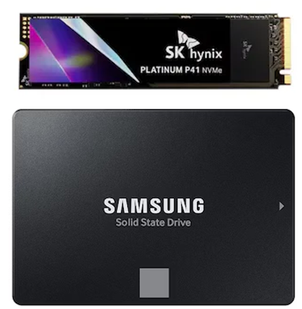
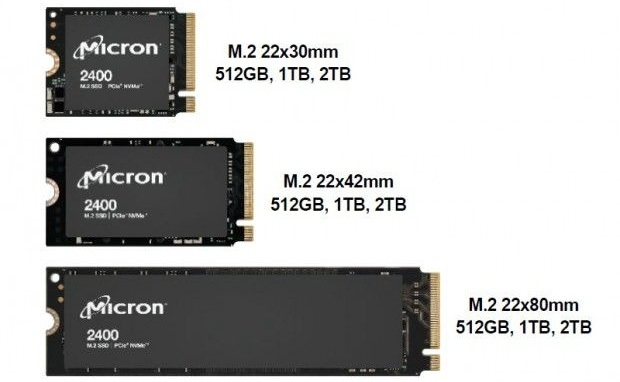

부품 고르는 법 - 부품 별 선택방법
SSD
SSD에는 일반적으로 NVMe SSD와 SATA SSD는 모두 고속 저장장치지만, 기술적 기반과 성능에서 뚜렷한 차이를 보입니다. NVMe SSD는 PCIe 인터페이스를 기반으로 설계된 저장장치로, CPU와 직접 데이터를 주고받을 수 있어 매우 빠른 전송 속도를 자랑합니다. 일반적으로 읽기 속도가 수천 MB/s에 달하며, 멀티태스킹이나 대용량 파일 처리, 고사양 게임, 영상 편집 등 고성능 환경에 적합합니다. 주로 M.2 또는 U.2, PCIe 슬롯 형태로 제공되며, 최신 메인보드에서의 호환성이 필요합니다. 반면, SATA SSD는 기존 하드디스크(HDD)와 동일한 SATA III 인터페이스를 사용하며, 최대 속도는 약 550MB/s로 NVMe보다 느리지만, 가격이 저렴하고 대부분의 시스템에서 쉽게 호환된다는 장점이 있습니다. HDD보다 훨씬 빠른 속도를 제공하면서도 안정적이기 때문에 일반 사무용이나 일상적인 용도의 업그레이드로 적합합니다.
M.2는 작고 얇은 SSD 폼팩터로, 주로 노트북과 데스크탑에 사용됩니다. 다양한 크기가 있는데, 가장 흔한 크기는 폭 22mm에 길이 80mm인 ‘2280’이며, 이외에도 길이가 42mm, 60mm, 110mm 등 여러 종류가 있습니다. M.2 SSD 크기가 여러 가지로 나뉘는 이유는 다양한 장치 환경과 용도에 맞추기 위해서입니다. 노트북, 미니 PC, 올인원 컴퓨터 등 공간이 제한적인 소형 기기에서는 짧고 작은 크기의 M.2 SSD가 필요하고, 데스크탑이나 고성능 서버에서는 더 긴 크기의 SSD를 장착해 더 많은 저장 용량이나 발열 해소 공간을 확보할 수 있습니다. 즉, 각각의 크기별 M.2 SSD는 장치의 물리적 공간, 용량 요구, 성능 요구, 냉각 능력 등을 고려해 최적화된 선택지를 제공하기 위해 다양하게 설계된 것입니다. 추가적으로 M.2 SSD는 SATA 또는 NVMe 인터페이스를 지원하는데, 특히 NVMe 방식은 PCIe를 통해 매우 빠른 데이터 전송 속도를 제공해 고성능 작업에 적합합니다.
| 크기 코드 | 가로(mm) | 세로(mm) | 설명 |
|---|---|---|---|
| 2242 | 22 | 42 | 짧은 길이, 초소형 장치에 적합 |
| 2260 | 22 | 60 | 중간 길이, 소형 PC 및 노트북용 |
| 2280 | 22 | 80 | 가장 일반적인 크기, 데스크탑 및 노트북용 |
| 22110 | 22 | 110 | 긴 길이, 고용량 또는 고성능 모델에 사용 |